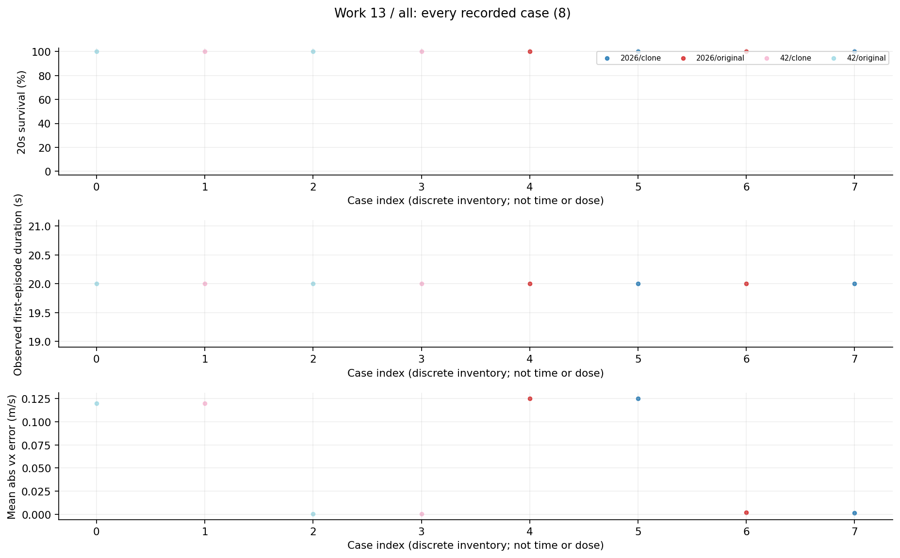
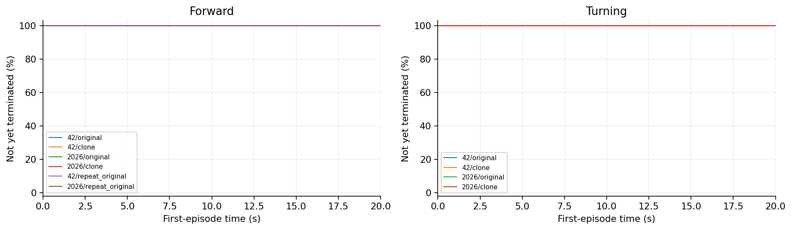
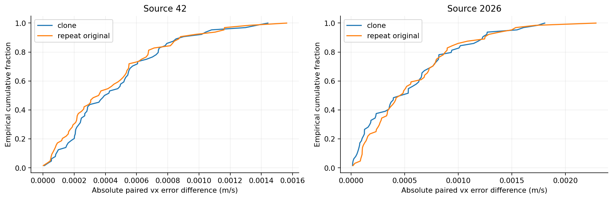

13 零更新克隆研究报告
文件字节、模型状态和同一观测的动作输出一致；独立闭环轨迹却不逐位一致，原模型重复也不同。严格轨迹门槛失败，不能事后放宽标准改称通过。
整理日期 2026年10月15日 本轮仅分析已有数据 不新增实验
工作范围
两来源、一个评估seed，原模型与零更新克隆在Forward/Turning共512回合，另原模型Forward重复128，共640首回合。
我们如何完成这项工作
完整checkpoint克隆但零优化更新。官方runner与独立序列化actor在相同观测上逐帧比较；另以原模型重复仿真区分克隆错误与模拟重复性。归一化mean/var/std/count及eps不变。
现有结果及解释
1. 两份完整checkpoint字节一致，同观测actor动作最大绝对差为0。八个原/克隆case均64/64存活，但四组全轨迹哈希不同。
2. 42的Forward原/克隆与原/原逐回合vx误差绝对差均值约0.000471和0.000442m/s；2026约0.000559和0.000583m/s。
3. 原模型自身也出现相当量级的差异，不能把全部闭环差异归为序列化或克隆实现错误；具体数值非确定性来源尚未定位。
完整结果表
阶段、条件和命令分别保留。未记录的指标显示未记录，不按0填充。表内百分比为存活，不是任务成功率。
查看本工作全部10个汇总单元
图表及读图注释
读图注释 “同观测函数一致”与“各自运行后经历同一物理轨迹”是两种检查。动作改变状态，之后观测不同会不断累积。
读图注释 本次把两条重复原模型记录也纳入总计640的表与图；它们不是独立训练seed，不能拿640回合充当640次训练。
英文坐标速查：survival 是规定时长存活，不是任务完成率；duration / seconds 是首回合有效寿命；vx 是前向速度，XY 是平面速度；yaw 是绕竖直轴旋转；MSE 是动作拟合平方误差；pp 是百分点，例如90%到80%为下降10个百分点。完整解释见读图指南。
图1 全部任务点 all

每个点是一项真实任务；横轴仅是文件记录顺序，不是连续变量，故不连线。点保留评估seed差异。条件、模型和分母可在全数据浏览器按编号查询；早停时误差只覆盖终止前。图2 逐故障首回合存续曲线 第1组

每个面板严格保持同一故障条件，未混合clean、启动和行走故障。纵轴为尚未终止的首回合比例，20秒超时保留在终点；0.1秒显示网格。合并的是同模型同条件评估seed，不是独立训练重复。图3 原克隆与原原重复的误差差值分布

横轴为相同环境编号的逐回合vx误差绝对差，纵轴为经验累积分布。两组差异相近不构成统计等价证明；闭环严格逐位门槛仍为失败。原/原重复128回合也计入本工作640总量。限制与不能支持的结论
没有故障、没有权重更新、只有一个评估seed。差值仅为描述性重复性参照，不是新预注册容忍阈值。
证据入口与复核范围
逐文件SHA及原始路径见输入清单；本轮复算范围见数据审计。下列输入在生成后再次核对未改。
D:\MicroDuckResearch\ti\outputs\microduck_reproduction\mechanism_audit\ppo_clone_baseline\results.json
SHA256 2b270687da7131a4b028f052c2404b3c7bbb794fc280f83e74a43ff3bc4eaddb
这项工作的价值
价值是建立后续训练干预之前必须面对的仿真重复性基线，避免把非逐位轨迹差异直接当成模型被修改或攻击成功，同时保留严格失败结论。